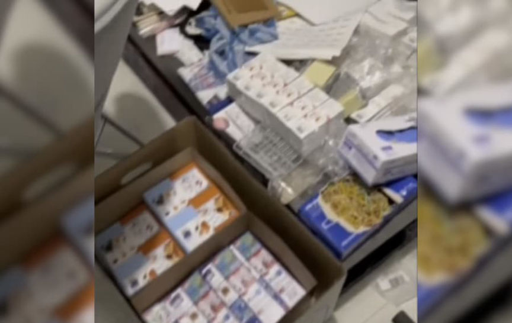
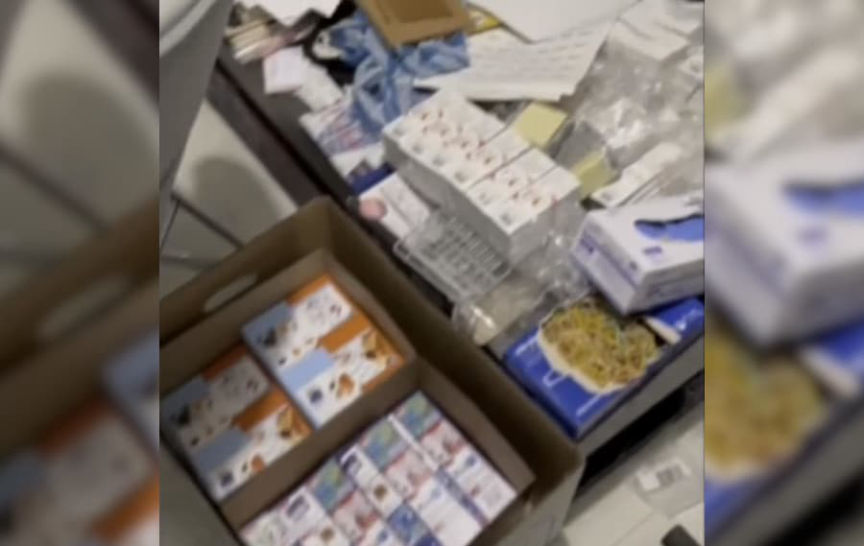

Bulgarian Customs Seized 200 Packages of Drugs in Ten Days
Bulgarian customs officers intercepted 198 packages of illegal drugs in ten days.
According to an announcement from Bulgarian customs, customs officers intercepted 120 packages of illegal substances between June 7, 2022, and June 17, 2022. Officers seized Tramadol, Oxycodone, Fentanyl, and Diazepam, among others. The packages contained approximately 120,000 pills and 40 kilograms of Khat.
The seizures were a part of a “specialized operation against drug trafficking via the darknet,” according to the announcement. Customs officers from a drug trafficking department of the Territorial Directorate (TD) Sofia Customs worked with the United States Drug Enforcement Administration during the operation.
“During the operation, the customs officers carried out numerous operational and search activities, as a result of which they intercepted and prevented the dispatch of 198 shipments to various destinations abroad.”
Based on the limited information in the announcement, it appears as if law enforcement officers primarily intercepted outgoing packages. Investigators determined that the contents of the packages - small quantities of pills or other substances - were “negotiated through Darknet platforms.” Suppliers in Bulgaria then prepared the drugs for shipment and mailed the packages to customers in the “USA, Europe, and Australia.”

Law enforcement officers disrupted three drug trafficking networks and dismantled one facility used by drug traffickers to prepare drugs for shipping. The Sofia City Prosecutor’s Office has already initiated four pre-trial proceedings due to the interceptions. Officers have also executed search warrants at homes, offices, and warehouses in Sofia and Lovech.
Four pre-trial proceedings have already been initiated in the cases, and investigations are ongoing. Numerous searches and seizures have been carried out in homes, offices, and warehouses in Sofia and Lovech.
Police arrested one person and charged him with smuggling narcotics. Investigations into other suspects are ongoing.
200 пратки с наркотици, пласирани чрез Darknet, задържаха митнически служители при операция Web Thunder | archive.org, archive.is, customs.bg
Pictuer quality here is so rough because the pictures are stills from this low-res YouTube video: <code>https://www.youtube.com/watch?v=ofJHkRnqYAU&feature=youtu.be</code> or via invidius: <code>https://inv.riverside.rocks/watch?v=ofJHkRnqYAU</code>
According to an announcement from Bulgarian customs, customs officers intercepted 120 packages of illegal substances between June 7, 2022, and June 17, 2022. Officers seized Tramadol, Oxycodone, Fentanyl, and Diazepam, among others. The packages contained approximately 120,000 pills and 40 kilograms of Khat.
A map of the intended destinations of packages intercepted by police.
The seizures were a part of a “specialized operation against drug trafficking via the darknet,” according to the announcement. Customs officers from a drug trafficking department of the Territorial Directorate (TD) Sofia Customs worked with the United States Drug Enforcement Administration during the operation.
“During the operation, the customs officers carried out numerous operational and search activities, as a result of which they intercepted and prevented the dispatch of 198 shipments to various destinations abroad.”
Based on the limited information in the announcement, it appears as if law enforcement officers primarily intercepted outgoing packages. Investigators determined that the contents of the packages - small quantities of pills or other substances - were “negotiated through Darknet platforms.” Suppliers in Bulgaria then prepared the drugs for shipment and mailed the packages to customers in the “USA, Europe, and Australia.”

Customs officers seized lorazepam pills during the operation.
Law enforcement officers disrupted three drug trafficking networks and dismantled one facility used by drug traffickers to prepare drugs for shipping. The Sofia City Prosecutor’s Office has already initiated four pre-trial proceedings due to the interceptions. Officers have also executed search warrants at homes, offices, and warehouses in Sofia and Lovech.
Four pre-trial proceedings have already been initiated in the cases, and investigations are ongoing. Numerous searches and seizures have been carried out in homes, offices, and warehouses in Sofia and Lovech.
Customs officers seized lorazepam pills during the operation.
Police arrested one person and charged him with smuggling narcotics. Investigations into other suspects are ongoing.
200 пратки с наркотици, пласирани чрез Darknet, задържаха митнически служители при операция Web Thunder | archive.org, archive.is, customs.bg
Pictuer quality here is so rough because the pictures are stills from this low-res YouTube video: <code>https://www.youtube.com/watch?v=ofJHkRnqYAU&feature=youtu.be</code> or via invidius: <code>https://inv.riverside.rocks/watch?v=ofJHkRnqYAU</code>